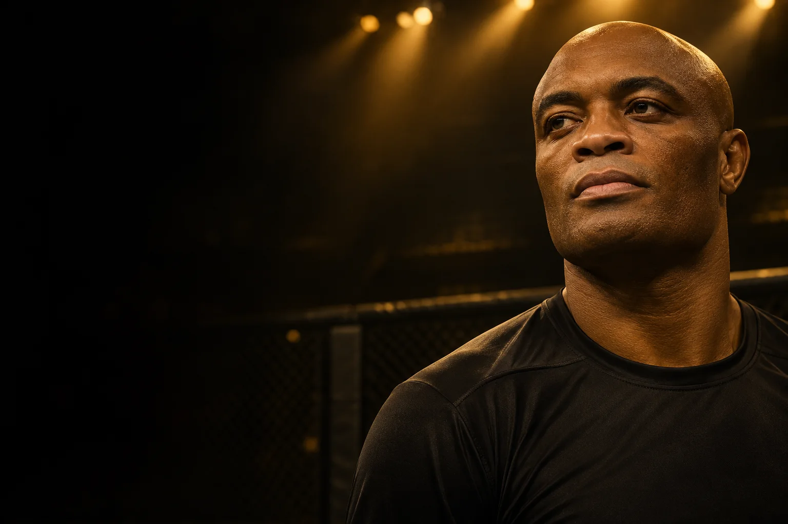
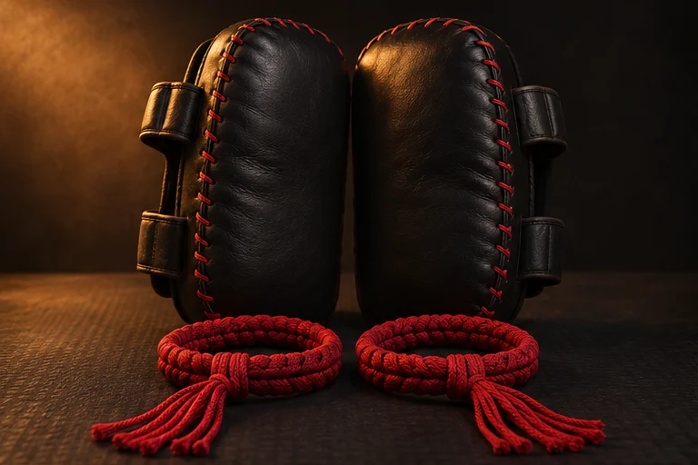
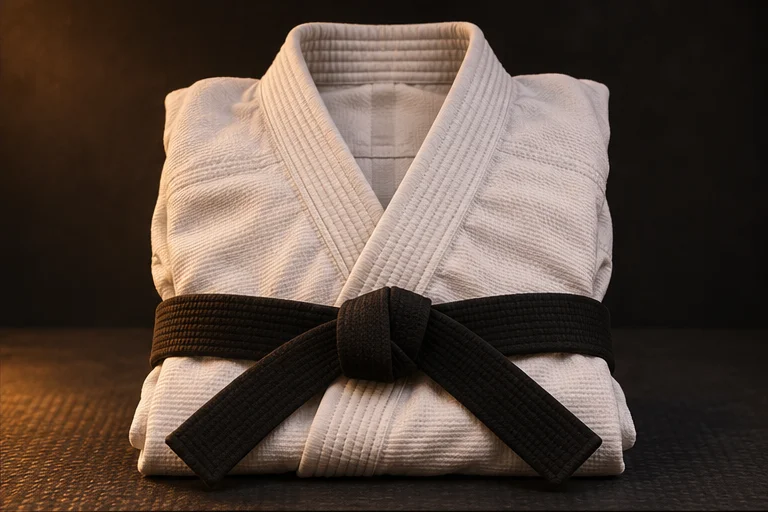
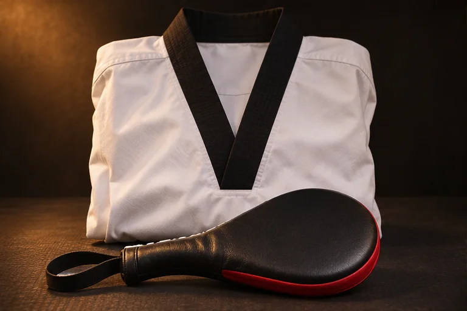

MMA brasileiro • Middleweight
Anderson Silva
De Curitiba ao topo do UFC. A trajetória do brasileiro que reinou na divisão dos médios e entrou para o Hall da Fama.
Uma carreira em marcos
Do circuito japonês ao Hall da Fama do UFC.
2002
Passagem pelo PRIDE
Silva estreou no PRIDE Fighting Championships, no Japão, com uma vitória sobre Alex Stiebling.
2006
Estreia e cinturão no UFC
Estreou contra Chris Leben em junho. Em outubro, venceu Rich Franklin no UFC 64 e conquistou o cinturão dos médios.
2010
A virada contra Chael Sonnen
No UFC 117, venceu por finalização no quinto round e manteve o cinturão.
2012
Dez defesas consecutivas
A vitória na revanche contra Chael Sonnen no UFC 148 marcou a décima defesa consecutiva do cinturão dos médios.
2023
Hall da Fama do UFC
Entrou para a ala dos pioneiros do Hall da Fama do UFC, em reconhecimento à sua trajetória no esporte.
Cartel profissional de MMA
34 vitórias, 11 derrotas e 1 luta sem resultado. Os números abaixo incluem toda a carreira profissional no MMA.
34 Vitórias
23 Vitórias por nocaute ou nocaute técnico
3 Vitórias por finalização
O estilo Spider
Quatro modalidades ajudam a entender a variedade técnica da carreira de Silva.
Muay Thai
O Muay Thai fez parte da formação de Silva em Curitiba e marcou seu trabalho em pé no MMA.

Jiu-jitsu
A finalização no quinto round contra Chael Sonnen no UFC 117 é um dos momentos em que o jiu-jitsu definiu o resultado.

Taekwondo
Silva começou a praticar taekwondo ainda jovem. A modalidade faz parte da formação que ampliou seu repertório de chutes.

Boxe
A movimentação e o ritmo do boxe marcaram suas lutas. Silva também competiu no boxe profissional, incluindo a vitória sobre Julio César Chávez Jr. em 2021.
Quanto você sabe sobre o Spider?
Escolha uma resposta por pergunta.
Em que ano Anderson Silva estreou no UFC?
- 2004
- 2006
- 2008
Quem ele venceu para conquistar o cinturão dos médios?
- Rich Franklin
- Chris Leben
- Chael Sonnen
Quantas defesas consecutivas de cinturão ele fez no UFC?
- 8
- 9
- 10